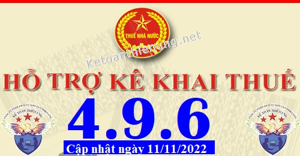
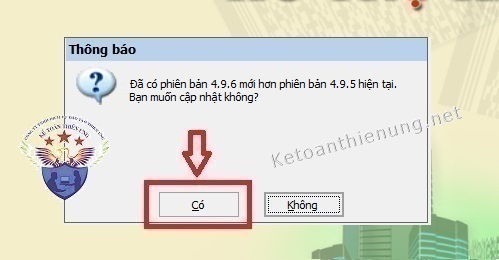
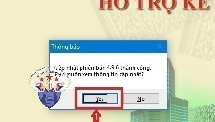

Phần mềm hỗ trợ kê khai thuế HTKK 4.9.6 mới nhất 2022 là Phần mềm HTKK 4.9.6 mới nhất ngày 11/11/2022 của Tổng cục thuế. Download phần mềm HTKK 4.9.6 miễn phí tại đây.
Ngày 11/11/2022 Tổng cục Thuế thông báo về việc Nâng cấp ứng dụng Hỗ trợ kê khai (HTKK) 4.9.6
TỔNG CỤC THUẾ THÔNG BÁO
V/v Nâng cấp ứng dụng Hỗ trợ kê khai (HTKK) phiên bản 4.9.6 cập nhật một số nội dung phát sinh
NỘI DUNG NÂNG CẤP ỨNG DỤNG HTKK 4.9.6
1. Cập nhật bổ sung phụ lục phiếu tổng hợp doanh thu đáp ứng Thông tư số 146/2017/TT-BTC
- Đối với tờ khai Thuế tiêu thụ đặc biệt mẫu số 01/TTĐB (TT 195/2015): Bổ sung phụ lục Phiếu Tổng hợp doanh thu đính kèm tờ khai khi chọn ngành nghề là “Ngành hàng sản xuất, kinh doanh thông thường”
- Đối với tờ khai Thuế tiêu thụ đặc biệt mẫu số 01/TTĐB (TT 80/2021): Bổ sung ngành nghề “Hoạt động sản xuất kinh doanh thông thường bao gồm casino”, bắt buộc đính kèm phụ lục Phiếu Tổng hợp doanh thu nếu chọn ngành nghề này
2. Tờ khai thuế nhà thầu nước ngoài mẫu số 01/NTNN (TT 80/2021)
- Cập nhật kiểm tra ràng buộc: “Chỉ tiêu [12] phải nhỏ hơn hoặc bằng giá trị làm tròn của chỉ tiêu ([10] x [11])”
3. Tờ khai đăng ký thuế tổng hợp người phụ thuộc của cá nhân có thu nhập từ tiền lương, tiền công
- Cho phép hoàn thành và kết xuất tờ khai khi nhập <Ngày cấp> bằng <Ngày sinh>
4.Tờ khai thuế đối với hoạt động cho thuê tài sản mẫu số 01/TTS (TT 40/2021)
- Cập nhật ứng dụng kết xuất đúng giá trị chỉ tiêu [22] – Số tháng cho thuê của hợp đồng tại phụ lục 01-2/BK-TTS
5. Cập nhật danh mục thuế tiêu thụ đặc biệt
- Bổ sung vào danh mục đối với nhóm hàng hóa “Xe ô tô chạy điện bằng pin” (Mã 10404075) hiệu lực từ ngày 01/03/2022 đến ngày 28/02/2027 như sau:
+ Loại chở người từ 9 chỗ trở xuống nhập khẩu bán ra trong nước (Mã 104040755): thuế suất 3%
+ Loại chở người từ 10 đến dưới 16 chỗ nhập khẩu bán ra trong nước (Mã 104040756): thuế suất 2%
+ Loại chở người từ 16 đến dưới 24 chỗ nhập khẩu bán ra trong nước (Mã 104040757): thuế suất 1%
+ Loại thiết kế vừa chở người, vừa chở hàng nhập khẩu bán ra trong nước (Mã 104040758): thuế suất 2%
- Cập nhật thuế suất đối với nhóm hàng hóa “Xe ô tô chạy điện bằng pin” (Mã 10404075) từ ngày 01/03/2027 như sau:
+ Loại chở người từ 9 chỗ trở xuống (Mã 104040751): thuế suất 11%
+ Loại chở người từ 10 đến dưới 16 chỗ (Mã 104040752): thuế suất 7%
+ Loại chở người từ 16 đến dưới 24 chỗ (Mã 104040753): thuế suất 4%
+ Loại thiết kế vừa chở người, vừa chở hàng (Mã 104040754): thuất suất 7%
+ Loại chở người từ 9 chỗ trở xuống nhập khẩu bán ra trong nước (Mã 104040755): thuế suất 11%
+ Loại chở người từ 10 đến dưới 16 chỗ nhập khẩu bán ra trong nước (Mã 104040756): thuế suất 7%
+ Loại chở người từ 16 đến dưới 24 chỗ nhập khẩu bán ra trong nước (Mã 104040757): thuế suất 4%
+ Loại thiết kế vừa chở người, vừa chở hàng nhập khẩu bán ra trong nước (Mã 104040758): thuế suất 7%
------------------------------------------------------------------------
Bắt đầu từ ngày 12/11/2022, khi lập hồ sơ khai thuế có liên quan đến nội dung nâng cấp nêu trên, tổ chức, cá nhân nộp thuế sẽ sử dụng các chức năng kê khai tại ứng dụng HTKK 4.9.6 thay cho các phiên bản trước đây.

----------------------------------------------------------------------------
Download Phần mềm HTKK 4.9.6 tại đây:

Để cài đặt được HTKK 4.9.6, máy tính của NNT cần đáp ứng thông số sau:
- Hệ điều hành WinXP (SP2, SP3), Win 7 trở lên… (không hỗ trợ hệ điều hành iOS, Mac).
- Máy tính có cài .NET Framework 3.5 trở lên (có thể tải bộ cài .NET Framework 3.5 tại đây).
- Nếu máy tính sử dụng hệ điều hành Win 7 trở lên không phải cài đặt .NET Framework 3.5 mà chỉ cần kích hoạt .NET Framework 3.5 đã tích hợp sẵn theo tài liệu hướng dẫn cài đặt tại đây
- Hệ điều hành WinXP (SP2, SP3), Win 7 trở lên… (không hỗ trợ hệ điều hành iOS, Mac).
- Máy tính có cài .NET Framework 3.5 trở lên (có thể tải bộ cài .NET Framework 3.5 tại đây).
- Nếu máy tính sử dụng hệ điều hành Win 7 trở lên không phải cài đặt .NET Framework 3.5 mà chỉ cần kích hoạt .NET Framework 3.5 đã tích hợp sẵn theo tài liệu hướng dẫn cài đặt tại đây
-----------------------------------------------------------------------------------------------
- Mọi phản ánh, góp ý của tổ chức, cá nhân nộp thuế được gửi đến cơ quan Thuế theo các số điện thoại, hộp thư điện tử hỗ trợ NNT về ứng dụng HTKK do cơ quan Thuế cung cấp.
Tổng cục Thuế trân trọng thông báo./.
-----------------------------------------------------------------------
Trường hợp: Máy tính các bạn đã cài phần mềm HTKK 4.9.5 rồi -> Các bạn chỉ cần Bật phần mềm HTKK 4.9.5 đó lên -> Phần mềm sẽ hiển thị Thông báo cập nhật lên Phần mềm HTKK 4.9.6 -> Các bạn bấm nút "Có"

-> Tiếp đó đợi phần mềm chạy cập nhật là xong nhé:

Như vậy là các bạn đã nâng cấp xong Phần mềm HTKK 4.9.6 nhé
- Trường hợp phần mềm không hiển thị như trên thì các bạn gỡ phần mềm cũ ra -> Cài phần mềm HTKK 4.9.6 nhé.
- Trước khi gỡ nhớ "Sao lưu dữ liệu" nhé! (Mặc dù khi gỡ HTKK 4.9.5 ra, rồi cài lại HTKK 4.9.6 thì không bị mất dữ liệu, nhưng mình khuyên các bạn vẫn nên sao lưu tra trước khi gỡ nhé)
------------------------------------------------------------------------